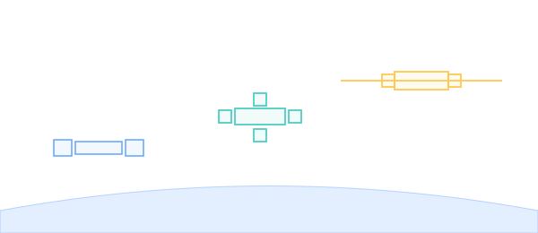

SPACE STATIONS

101 · zoom in
Space Stations — pressurized boxes that fall forever.
A space station is what you get when you stack human-rated pressure vessels in low Earth orbit and never let them come down. Every system on board exists to keep the inside warmer than -270°C and at one atmosphere of breathable air, while the outside does its best to claw the air back out (vacuum) and chill the metal to space temperatures (radiative cooling).
Three numbers really define a station: how much pressurized volume the crew has to live and work in, how the pressure modules are connected (nodes), and how much electrical power the solar arrays can deliver. The three sections here unpack each of those — what they are, how they're sized, and how the ISS and Tiangong made different design choices.
Stations aren't just "big spacecraft." They're permanent, modular, and grow over time. The ISS started as one Russian module (Zarya, 1998) and grew to a 109-meter truss with sixteen pressurized modules over fifteen years of incremental launches. Tiangong went up faster (2021–2022) but follows the same logic: launch one box, dock the next, plug it in.
→ Pick a section from the right rail to start reading.